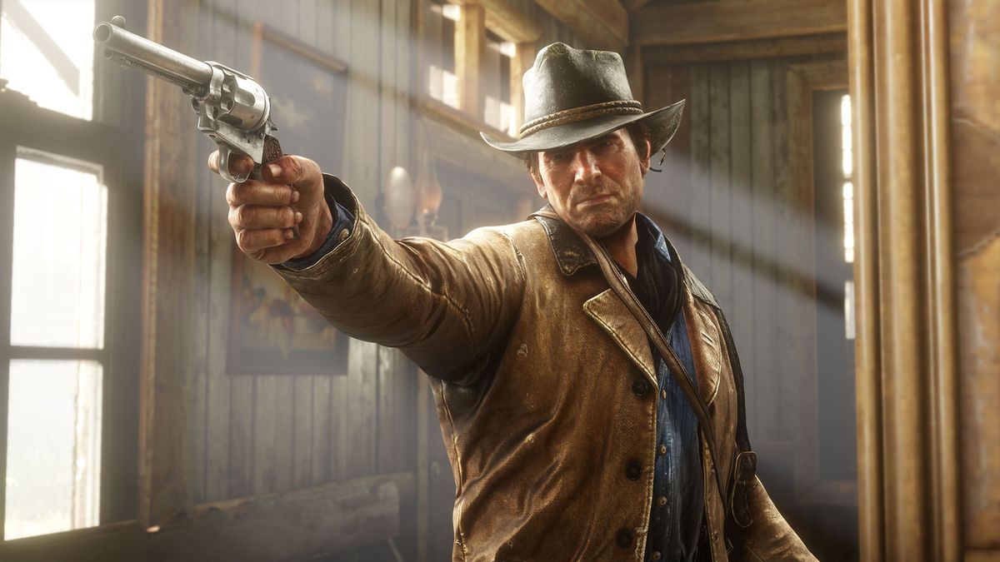
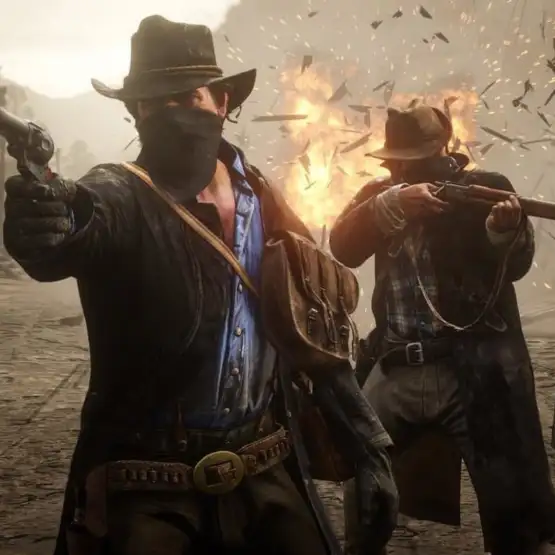
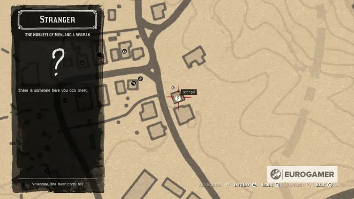
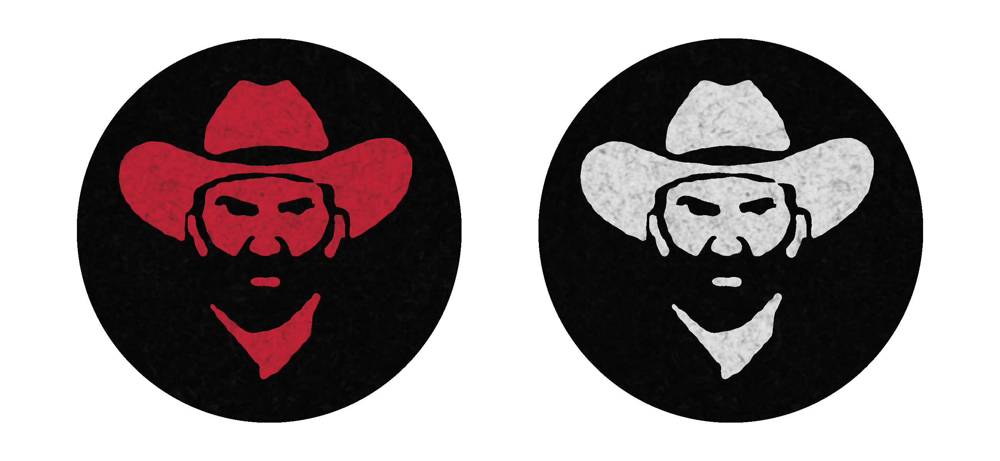
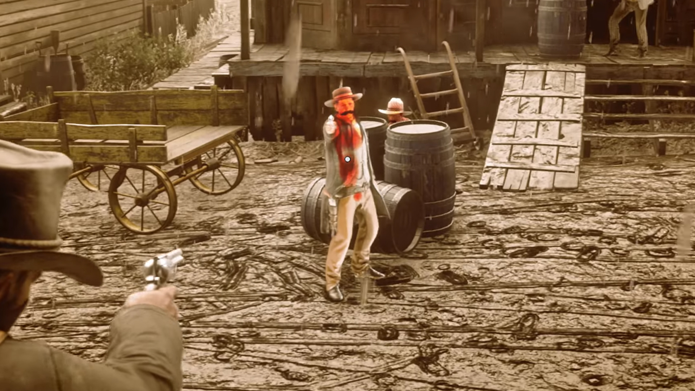
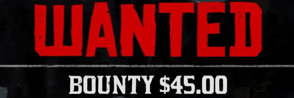

Jogabilidade
Jogado numa perspectiva de primeira ou terceira pessoa, o jogo se passa em um ambiente de mundo aberto, apresentando uma versão fictícia do Oeste, do Centro-Oeste e do Sul dos Estados Unidos em 1899, durante a segunda metade da era do Velho Oeste e a virada para o século XX. O jogo apresenta modos para um jogador e multijogador on-line, este último lançado sob Red Dead Online. Na maior parte do jogo, o jogador controla o fora-da-lei Arthur Morgan, um membro da gangue Van der Linde, a fim de concluir várias missões — cenários lineares com objetivos definidos — para progredir na história; no epílogo do jogo, o jogador controla John Marston. Fora das missões, o jogador pode percorrer livremente em seu mundo interativo. O jogador pode entrar em combate com inimigos usando ataques corpo a corpo, armas de fogo, armas impulsoras ou explosivos. O combate foi refinado a partir de seu antecessor, e as novas mecânicas notáveis consistem em empunhadura dupla e na capacidade de usar um arco, além disso, ao contrário do jogo anterior, o jogador tem a capacidade de nadar.
As terras inexploráveis de Red Dead Redemption 2 compõe a maior parte do mundo do jogo e apresenta diversas paisagens, além de viajantes ocasionais, bandidos, e animais selvagens. Existem locais urbanos no jogo, variando de fazendas a vilas e cidades. Cavalos são os principais meios de transporte, dos quais existem várias raças, cada uma com atributos diferentes. O jogador deve treinar ou domar um cavalo selvagem para usá-lo, exceto cavalos roubados; no entanto, eles devem selar um cavalo para adquirir propriedade sobre ele. O aumento do uso de um cavalo iniciará um processo de união, que pode ser aumentado pela alimentação e limpeza do animal, com o jogador obtendo vantagens ao montar seu cavalo. Também podem ser usados carruagens e trens para viajar. O jogador pode sequestrar um trem ou uma carruagem ameaçando o motorista ou os passageiros e depois roubá-los.
O jogador também pode testemunhar ou participar de eventos aleatórios encontrados ao explorar o mundo do jogo. Isso inclui emboscadas, crimes cometidos por outras pessoas, pedidos de assistência, tiroteios, execuções públicas e ataques de animais. Por exemplo, à medida que o jogador explora o Velho Oeste, ele pode encontrar pessoas específicas em perigo. Se o jogador decidir ajudá-las, será gratificado e poderá recompensá-lo se cruzá-lo novamente. O jogador também pode participar de atividades paralelas, que incluem pequenas tarefas com companheiros e estranhos, duelos, caça a recompensas, busca de tesouros ou outros itens colecionáveis ao redor do mapa, como esculturas em pedra, jogo de pôquer, blackjack, dominó e jogo de faca. A caça de animais também desempenha um papel importante no jogo, fornecendo comida, renda e materiais para a criação de itens. Ao caçar, o jogador precisa levar em consideração vários fatores, incluindo a escolha da localização da arma e do tiro, que afetam a qualidade da carne e da pele e, posteriormente, os comerciantes de preços estão dispostos a pagar. O jogador pode esfolar o animal imediatamente ou carregar a carcaça, que apodrece com o tempo e diminui seu valor e atrai predadores.
O jogo se concentra fortemente na escolha do jogador para a história e missões. Certos momentos da história darão ao jogador a opção de aceitar ou recusar missões adicionais e modelar levemente o enredo em torno de suas escolhas. O jogador pode se comunicar com qualquer personagem não jogável (NPC) de maneiras dinâmicas novas para a série. O jogador pode escolher diferentes árvores de diálogo com os NPCs, como ter um bate-papo amigável ou insultá-los. Se o jogador escolher matar um NPC, ele pode saquear seu cadáver. Red Dead Redemption 2 retorna com o sistema de honra de seu antecessor, medindo como as ações do jogador são percebidas em termos de moralidade. Escolhas e ações moralmente positivas, como ajudar estranhos, cumprir a lei e poupar oponentes em um duelo, contribuem para a honra do jogador. No entanto, ações negativas, como roubo e danos a inocentes, serão subtraídas da honra do jogador. A história é influenciada pela honra, pois o diálogo e os resultados para o jogador geralmente diferem com base no nível de honra. Atingir marcos para o nível de honra do jogador concederá benefícios exclusivos, como recompensar o jogador com roupas especiais e grandes descontos nas lojas. Um nível baixo de honra também é benéfico, pois o jogador receberá um número maior de itens dos cadáveres saqueados.
Manter Arthur e John é importante, pois eles podem sofrer condições que afetam seus atributos de saúde e resistência. Além de uma barra desses atributos, o jogador também possui núcleos, que afetam a taxa na qual sua saúde e resistência se regeneram. Por exemplo, usar roupas mais quentes significa evitar o congelamento em um ambiente frio, mas usá-las em um ambiente quente resultará em transpiração. O congelamento ou superaquecimento drenará rapidamente os núcleos. O jogador também pode ganhar ou perder peso, dependendo de quanto ele come; um personagem com baixo peso terá menos saúde, mas com um aumento de resistência, enquanto um personagem com excesso de peso será capaz de absorver melhor o dano, mas terá menos resistência. O jogador pode comer e dormir para reabastecer seus núcleos. O jogador pode tomar banho para se manter limpo e pode visitar um barbeiro para trocar de penteado; o cabelo também cresce realisticamente com o tempo. O jogo apresenta degradação de armas, com elas requerindo limpeza para manter seu desempenho. Quando o jogador usa um determinado tipo de arma por um longo período de tempo, ele se torna mais experiente, o que melhora o manuseio da arma, reduz o recuo e aumenta a taxa de recarga.

Os tiroteios são uma mecânica essencial no jogo. O jogador pode se esconder, mirar livremente e mirar em uma pessoa ou animal. Partes individuais de um corpo também podem ser direcionadas para derrubar alvos sem matá-los. Quando o jogador atira em um inimigo, as reações e movimentos da IA do jogo dependem de onde foram atingidos. As armas consistem em pistolas, revólveres, espingardas, rifles, arcos, explosivos, lassos, Gatlings e armas brancas, como facas e machados. Red Dead Redemption 2 traz de volta a mecânica do Dead Eye, um sistema de mira que permite que o jogador diminua o tempo e marque alvos. Quando a sequência de direcionamento termina, o jogador dispara para todos os locais marcados em um espaço de tempo muito curto. O Dead Eye é atualizado à medida que o jogador avança no jogo e concede ao jogador mais habilidades, como ser capaz de identificar os pontos fatais de seus inimigos.
O sistema de recompensas também retorna de Red Dead Redemption, uma mecânica que governa o crime inspirado no sistema de procurado da série Grand Theft Auto. Quando um jogador comete um crime, as testemunhas correm para a delegacia mais próxima para que a lei intervenha, com o jogador precisando parar a testemunha para evitar repercussões. Depois que a lei é alertada, os policiais aparecem e começam a investigar. Quando o jogador é pego, o medidor de procurado aparece com uma determinada recompensa. Essa recompensa aumenta à medida que o jogador comete mais crimes, e mais homens da lei serão enviados para caçá-lo. Se o jogador cometeu crimes graves e depois consegue escapar da lei, os caçadores de recompensas serão contratados para localizá-los no deserto. Depois de cometer crimes suficientes, os marechais americanos serão enviados para a localização do jogador. Para escapar da aplicação da lei, o jogador deve evitar uma zona circular vermelha no mapa e o medidor desejado se esgota lentamente. Como alternativa, eles podem se esconder dos perseguidores ou matá-los. Se o jogador escapar ou for capturado, a recompensa permanecerá em sua cabeça, os homens da lei e os civis estarão mais atentos, e as regiões onde os crimes foram cometidos ficarão sob vigilância. Quando capturado por homens da lei, o jogador tem a oportunidade de se render se estiver desarmado e a pé, embora os caçadores de recompensa não aceitem a rendição se o jogador souber escapar das tentativas de apreensão. O jogador só pode remover sua recompensa pagando em uma agência postal.
